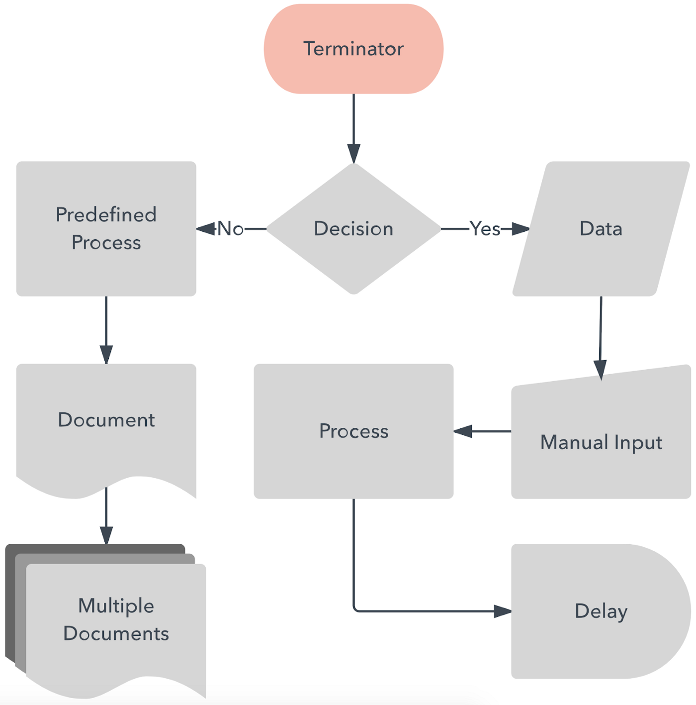

DOCUMENTATION
We can define User Flow as the path that a typical user
follows on a website or application to complete a task. The user flow comprises from the
point of their entry, adding the steps they execute until they meet the task with a
successful result. (Arias)
The flowchart is a way of graphically representing a process
through a series of
well-structured and related steps that allow an understanding of the whole. A series of
geometric figures are usually used to describe each step of the process. These forms are
defined and are connected to each other through arrows and lines that mark the direction of
the flow and determine the route.
There are numerous software that allows us to create User
Flow. Some are easy to understand, others a bit more complicated; we can find programs such
as Adobe XD, Miro, Figma, Sketch, Illustrator, etc.
Although I am familiar with the Adobe Suite, the Figma
interface is more friendly. I learned so easy with easy access to all kinds of base layouts
and video tutorials. Both software are perfect for prototyping, but Figma offers FigJam an
online whiteboard for teams or single work to brainstorm and brainstorm together
(Nordquist). Figma and
Adobe XD are popular UX/UI design software. However, you can access Figma free of the price
compared with Adobe XD that you have to pay.
There are different ways to convey how users experience a
flow. We can approach diagramming it in many different ways. For this assignment, there are
a couple of diagrams that we could use, such as Flow maps that show a sequential set of
steps at a high level. Flow diagrams are useful for highlighting various conditional states
in a sequential flow. Another option is the Workflow diagram that focuses on the user's
workflow and highlights various tools they work with (Cronenwett). I decided to use Flow
diagrams using the UML (Unified Modeling Language). When a series of geometric figures are
used to describe each step of the process with a standard meaning, e.g. diamonds denote
decisions or ovals represent the beginning and end of a process. But I was very tempted to
use Wire Flows

When I analyzed each scenario and their cases, I decided
to become that user so I could experience and define each step in the user flow.
To conclude, I strongly agree with Roy Mac in his article
about UX Flows. UX Flows are so confusing that a uniform standard and guidelines should
exist to follow.
Considering the variability of such diagrams in the real world, perhaps the
more significant problem is that different visualizations are being conflated under the
banner term “User Flow” (Mac).
References
Cronenwett, Diane. “The Power of Flow in Interaction
Design -
Sketch Video Tutorial: Linkedin Learning, Formerly Lynda.com."" LinkedIn, 10 Mar. 2020.
URL
Dwivedi, Neelam. “A Picture Is Worth a Thousand Words -
Unified Modeling Language (UML) Video Tutorial: Linkedin Learning, Formerly Lynda.com.”
LinkedIn, 23 Sept. 2019, URL
Mac, Ryo. “Ux Flows, and Why They're so Confusing.” Medium,
Prototypr, 22 Sept. 2020,URL
Nordquist, Eric. “Migrating to Figma - Figma Video
Tutorial:
Linkedin Learning, Formerly Lynda.com.” LinkedIn, 4 Oct. 2021, URL
Prado, Javier Arias Del. “Qué Es Un User Flow O Flujo De
Usuario - UXABLES: Blog.” UXABLES, 27 Jan. 2020,URL